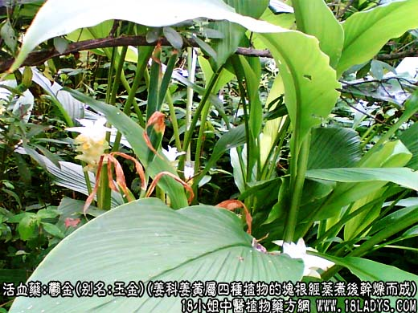
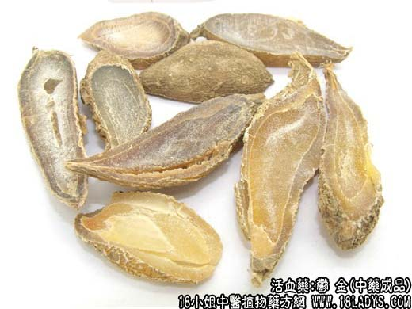
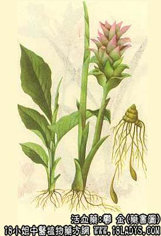

郁金为常用中药。始载《唐本草》，原为姜黄的根茎。现商品郁金则为姜黄的块根和同属植物的块根。其根茎则分别命名为其他药材（见姜黄附注）。
别名：玉金、玉京。
来源：为姜科多年生草本姜黄属四种植物川郁金或姜黄或莪术或毛莪术的块根经蒸煮后干燥而成。栽培或野生。包括以下品种：
1、姜黄的块根，产地名黄丝郁金，商品名川玉金、黄玉金。
2、莪术的块根，产地名绿丝郁金，商品亦名川玉金、黄玉金。
3、温郁金的块根，产地名温郁金，商品别名黑玉金。
4、毛莪术的块根，产地名莪苓，商品名桂玉金或云玉金。
5、川郁金的块根，产地四川，商品名自丝郁金。
产地：1、川玉金：（姜黄和莪术的块根）主产于四川崇庆、双流、犍为、新津、宜宾等地。
2、温玉金：主产于浙江温州地区的瑞安县。
3、桂玉金：主产于广西、云南。
性状鉴别：1、川玉金：呈卵形或纺锤形，长1.5~3厘米，直径0.5~1.5厘米，两端稍尖或一端钝圆一端稍尖。表面灰黄色或淡棕色，有极细密的皱纹。质坚实，横断面平坦光亮，角质状，黄色或橙色，中部有一圆心，约占有径的1/3~1/2以上，层圈分明，易瑕部剥离，整个圆心呈圆枣核状。气带姜香，味辛而苦。
以粒大均匀，皮细坚实，断面橙黄色者为佳。
2、温玉金：呈纺锤形同答弯曲而稍扁，长3~6厘米，直径1~1.5厘米。表面暗灰色，有较粗的密皱纹。质坚实，断面平滑光亮。角质状，褐色、棕褐色或淡褐色，中部圆心随外形的变化呈圆形或扁圆形，层圈分明，但与皮部结合紧密。气微，味微苦辛。
以个大均匀，外皮少皱缩，断面褐色，光亮者为佳。
3、桂玉金：呈纺锤形或卵圆形，有的稍扁，长2~6厘米，直径0.8~1.5厘米。表面灰黄白色，有较细的皱纹。质亦坚实而稍松脆，断面平滑光亮，角质状，黄白色、余略与川郁金相同。气微，味辛苦。
以粒大，皮细，断面黄白色者为佳。
主要成分：含挥发油。油中成分大体与各自的根茎（莪术）相似。
药理作用：理气、散瘀、止痛。其作用为：（1）健胃；（2）利胆：姜黄素能促进胆汁分泌和排泄，能减少尿内的尿胆元；（3）利尿，故有助于清热。此外，还有轻度的镇痛作用。
炮制：切片、生用。
性味：辛、苦、寒。
归经：入心、肝肺经。
功能：舒气解郁，凉血破瘀，利胆。
主治：两胁胀满，胸腹疼痛，痛经，吐衄血，癫狂，热病神昏，湿热黄疸，胆石症。
临床应用：为疏肝解郁止痛的重要药物。
1、治肝郁胁痛属气血郁滞者，表现有胸胁满闷和胀痛，例如慢性肝炎和肝硬变所致的肝区痛，可在逍遥散基础上加郁金。
2、治泌尿系疾患，多用于肾结石等引起的肾区痛，取其有利尿和镇痛作用。常配利尿渗湿药（参考金钱草项下肾石方）；治肾结核的血尿可配旱莲草、冬葵子、石苇等。
近年来，郁金也用于中西医结合治疗胆石症，配金钱草，枳壳、木香、大黄等，加强利胆镇痛作用，方如胆道排石汤（天津南开医院方），对较小的或泥沙样的肝胆管结石而无严重梗阻或感染者，有一定疗效。
3、治血瘀经痛，尤其适宜于经前痛而偏于热，有气血郁滞表现者，可用郁金配柴胡、当归、黄苓等，方如宣郁通经汤（本方中郁金善解气郁，当归善解血郁，黄苓善解热郁，配合应用有加强理血清热镇痛作用）。
4、治湿温神昏（如“流脑”、“乙脑”病人的神志不清或呆滞），郁金配菖蒲最常用，有清心热和芳香开窍作用，可加入清热解毒方剂内。
又治癫狂（精神分裂症的躁狂状态）或癫痫，与痰气郁结有关者（胸闷、不思饮食、吐涎沫、苔腻、脉滑），可用郁金配白矾，以解郁除痰，方如白金丸。但单用效力较薄，现代多用白金丸味（如菖蒲、朱砂、胆南星、丹参等）。
附：1、郁金的商品种娄分为广郁金和川郁金，但其名称与产地并不相符。广郁金（又名黄郁金）主产于四川；川郁金（又名黑郁金）主产于浙江温州，也称温玉金。两者功用大同小异，一般用广郁金较多，而川郁金的特点是：药性较温和，祛痰而又不致于过分虚散，体虚者可以选用；
2、郁金习惯上不与丁香同用；
用量：3～9g。
处方举例：1、胆道排石汤（天津南开医院方）：金钱草30g，茵陈15g，郁金15g，枳壳9g，木香9g，生大黄6~9g，水煎服。
2、宣郁通经汤（傅青主）；川郁金3g，当归15g，黄苓3g，白芍15g，丹皮15g，山栀子9g，白芥子6g（炒研）柴胡3g，香附3g，生甘草3g，水煎服，每日1剂，连服4剂。
3、白金丸（古验方）；白矾30g，郁金30g，共为细末，面糊为丸，每日三次，每次3g，开水送服，也可用菖蒲9g煎汤加数滴姜汁送服。
注：1、郁金习惯认为四川产品颗粒均匀，皮细，内色黄亮，品质最好。浙江产品颗粒大，较瘪瘦，皮粗，内色黑褐，品质较差。但在门市配方中，习惯称川郁金为广郁金，温郁金称川郁金，实属错冠产地。应根据产地结合植物情况，研究更正。
2、广西、云南产品原名莪苓，为郁金的代用品，一九五九年《中药志》命名为桂郁金，同等使用。
3、郁金畏丁香。